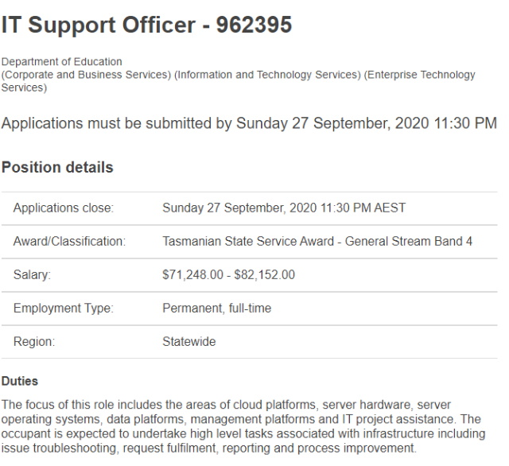
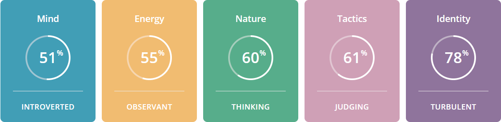
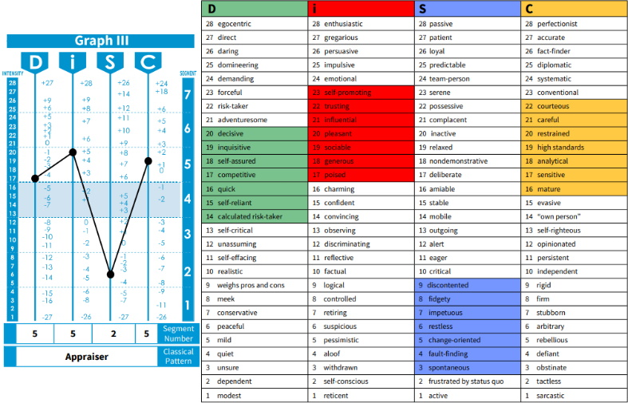
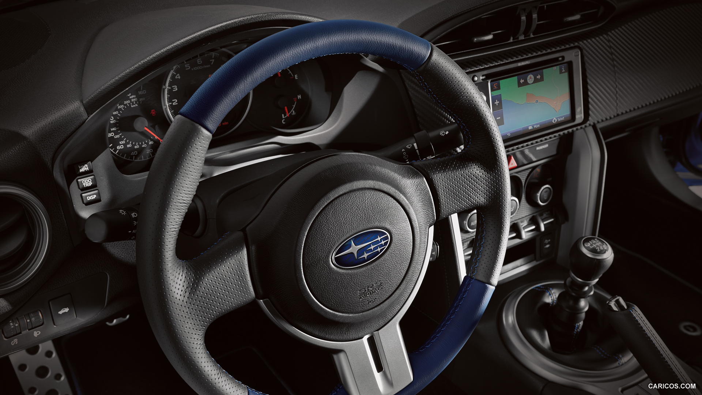

COSC2196 - Introduction to IT
Assessment 1: My Profile
About Me
Name: Liam Sackley-Akacich
Student Number: s3879126
Email address: liam.sackley.akacich@gmail.com / s3879126@student.rmit.edu.au

My name is Liam, I am 23 years old and I live in Launceston, Tasmania. I work in the IT industry, for a managed service provider. I studied a Certificate III of Design Fundamentals with University of Tasmania. In addition to IT, I am passionate about cars and I enjoy applying IT to that field. An interesting fact about me is that I have a pet rabbit called Buffy. She is a Flemish Giant, so she is quite large.
My Interest in IT
Information technology has always been a dynamic part of my life. There are so many facets of the topic that I enjoy and take interest in, so it is always changing and evolving.
My fascination with IT started when I was introduced to console gaming at the age of 8. It started with a PlayStation 1 and evolved into a general understanding of how computers and other IT systems worked. When I was 15, I was introduced to game coding, and I spent many hours learning how to use a software called Gamemaker Studio. This interest moved into PC building, and PC gaming which added to my knowledge base of IT that I now use every day.
Currently my main interests in IT stem from my job in the managed service provider space.
I work in a fast-paced helpdesk environment that has to deal with lots of different business IT solutions. At work I am interested in software solutions such as Microsoft 365, Sophos managed antivirus and firewall deployments. I enjoy configuring business and user specific software so that my customer's work life is easier when it comes to IT. I find solving problems satisfying, and it is even better when the work I do has a positive effect on someone else's life. I also get to practice effective communication which I enjoy too.
In my personal life my main IT interests involve automotive electronics and home networking. I have a passion for cars, and I enjoy integrating cool electronics and gadgets into my car, that both make my car safer and more pleasurable to drive. I have also recently moved out of home into my own house, so I have had to use my IT skills to create a home network for my PC’s and other devices. I have found this very rewarding because I get to use the skills I have acquired from my job to make my network environment function exactly how I want it to.
Why RMIT?
I chose to start studying with IT for several reasons. Firstly, I had become frustrated with my career progression due to not having completed any formal certifications or degrees. I realised that it would aid in furthering my career if I had a degree. Furthermore, I started to understand what I wanted to do with my life, and where I wanted to be in the next five to ten years. To achieve these goals, I knew I needed to have a higher income to support them, after doing some job searching I felt that having a degree would be a great help in my objective to start building a successful life.
With my current work life balance, I was concerned that I wouldn’t have time for study, so I started to research universities that offered flexible online learning. I found that studying IT with RMIT, through Open Universities Australia would fit into my life.
I'm hoping that my studies with help me extend my industry knowledge from working in IT for almost two years. I expect that I will find new interests within IT, and that I will be able to build my passion for IT into a successful career.
My plan is to pair at bachelor's degree of information technology with industry experience and industry recognised certifications, such as Microsoft certificates etc. I feel as though having this knowledge will give me a good profile when searching for employment in the industry.
My Ideal Job
Department of Education IT Support Officer
Alternate Link

(Tasmanian Government Jobs, 2020)
The advertised position for IT support officer with the Tasmanian Department of Education is a role that includes remote and onsite support for the staff in the education department. It involves supporting equipment such as enterprise server infrastructure, PC endpoints and cloud software platforms.
This job is appealing to me since I have had experience as an onsite technician with a multi-site aged care provider called Masonic Care Tasmania. In that position I reported to an IT manager and my daily tasks included user IT support and taking care change requests. I got to experience working with servers and how they are strategically set up in a network so that they achieve desired IT outcomes for users and administrators. I found this very rewarding in my early days in the IT industry because it exposed me to situations that taught me the industry standard for IT infrastructure management.
From speaking with the contact person for the position, this role is very similar to the role I fulfilled at Masonic Care Tasmania. It includes visiting schools and department offices to solve IT issues involving both hardware and software. IT also involves understanding how the core systems that are used by the department function, so that troubleshooting can be supported by core system knowledge.
The skills required were listed in the selection criteria for the position. They expect applicants to have skills in desktop PC support including peripherals and networking, equipment deployment and maintenance, as well as software development and installations. Another important quality applicants need to possess is the ability to communicate effectively and have good interpersonal skills. Conceptual and analytical problem solving knowledge is also needed. Sine the role puts you into a team of technicians and IT support officers, having the ability to work well in a team is important too.
My current skill set contains most of the listed requirements, and I am confident that my application would be considered. Since my experience at Masonic Care Tasmania was very similar, I am confident this is a role I could perform well in. It would also provide me with more learning opportunities, since I’m certain that the department of education uses IT solutions I have limited knowledge on.
An area of the position that was mentioned was software development. This is a topic that I have a low amount of experience in. My plan to grow my knowledge in this area is to complete the introduction to programming unit of my degree. I feel as though this will give me a good foundation into some of the areas that are required in this position.
Personal Profile
Myer-Brigs Type Indicator Results:
For the MBTI personality test my results were as follows;
51% Introverted
55% Observant
60% Thinking
61% Judging
78% Turbulent

These results class me as a Turbulent Logistician type. This personality type is said to be “reserved but willful with a rational outlook on life”. Turbulent Logisticians “compose their actions carefully and carry them out with methodical purpose”. (Introduction | Logistician (ISTJ) Personality | 16Personalities, 2020)
I think that this result describes my behaviours accurately. In the workplace I definitely take my time with jobs and carry them out methodically and rationally. I do this so that I can ensure work is done well, and it is not something I will need to come back to and do again. It is somewhat of a perfectionist style of doing things. I do have to balance this trait though, because it can become something that ends up causing work to take too long sometimes.
Learning Style
For the learning style test my results were as follows;
Theorist style: 0.294
Pragmatist style: 0.222
Reflector style: 0.222
Activist style: 0.158
Activist style: 0.158

The results of this learning style test show me to be a Theorist Style learner. This means problems are thought through in a logical manner with attention to rationality and objectivity. Theorist style learners are disciplined, and “they are often keen on basic assumptions, principles, theories, models and systems thinking”. (Dallakian, 2020)
I find that these results match with the Myer-Brigs Type Indicator test in that I am rational and methodical. But the results of the learning style test are also quite spread across all types. In my experience I do learn best from getting hands on with a problem, as this result suggests, but I can adapt my learning style to other types as well. Sometimes it may not be possible for me to be hands on with an issue, in those cases I adjust how I approach a problem so that I can maximize the amount of knowledge I gain from the experience.
DiSC Profile
The third personality test I completed was called a DiSC profile. This test is a “nonjudgmental tool that is used for discussion of people’s behavioural differences” (DiSCProfile.com, 2020). The test was given to me by my employer to help start a conversation between my manager and I about how our behaviours can be better understood and used in the workplace to achieve better work results. My results were as follows;

The results show that I am classified as an Appraiser. The description for this classification describes an appraiser to have a strong drive for success and accomplishment. They often find a way to get things done, and work best when part of a well-balanced team. Appraisers are good critical thinkers and this skill melds well with employment of direct methods to achieve desired results. (DiSC Profile, 2019)
From reading the full results of this test, I substantially agree with the classification I was given. It aligns well with the way that I behave in a team and it has helped me to better understand the effects of my personality when working as part of a team.
The results of all three tests have confirmed to me that my behaviours when working in a team are conducive to completing the task at hand in a positive manner. I lean heavily on objective based thinking and methodical approaches; this influences the way I interact with other team members and how I approach working on a task with other group members.
When forming a team, I should lean on my workplace experience as a leader. Primarily, by helping to organise the team so that we have mutually agreed upon methods of communication. Helping to schedule meetings for discussing tasks and making sure that work is spread evenly between group members. This also gives group members the opportunity to update the other group members on their progress.
Project Idea
My IT project is a Bluetooth device which pairs to a smartphone, that can be used to control audio playback on a smart phone. I imagine a small device with skip forward, skip back and volume up/down buttons, that would be mounted to a surface. The device would be intended for use in a car as steering wheel controls for media playback. It could have car specific designs that fit certain types of OEM steering wheels, and a generic design that can be used on other vehicles and in other applications.
My motivation for this comes from recently installing new audio equipment into my car. Since upgrading the head unit in it, I have found that I want steering wheel controls for the music. My car did not come with these buttons on the steering wheel, so I find that I am often taking my eyes off the road to skip a song or turn the volume up. Newer models of my car came with steering wheel controls, and purchasing a new steering wheel is an option, but it would be expensive and involve complicated wiring to retro fit it into an older car.

(CARICOS, 2015)
The device would have several areas needing development. Design is an important factor since it needs to be easy for a user to interact with. It needs to be intuitive to the point where users wont even need to read an instruction manual to understand its purpose. It would need to resemble other steering wheel control panels, so that users can recognize what it is.
I imagine the device to be thin and low profile so that it does not look out of place, and so that it is not an obstruction o. the steering wheel. It would need to be powered as it would contain a small circuit board. An internal battery that receives power via a micro USB port would be appropriate. The product could include a car 12 volt to micro USB adapter cable for charging. A low battery indicator light would also be helpful, so the user knows when its going flat.
The device could be manufactured with a 3D printer using plastic as the material. The manufacturing process would entail making the plastic casing which houses the circuit board, and the buttons would fit into holes which are designed into the 3D model.
There could be many different designs made for different cars which did not come with steering wheel controls, and I imagine each design to look as though it was made for that specific model of car.
The software side of the project would include developing the electronic components in the device. This involves programming the Bluetooth chip to integrate with most modern smart phone’s Bluetooth systems. The team would have to investigate whether there is a standard communication method that Bluetooth devices use to tell a phone to skip forward, skip back and modify the volume level. The micro USB port I suggested for charging could be used as the interface for programming the Bluetooth chip.
This project involves several tools and technologies. The Bluetooth chip would require code to be written for it, this can be done in a text editor like Microsoft Visual Studio Code or Atom.io. A 3D printed prototype would need to be designed and printed in 3D CAD software such as Blendr, which can do both. Coding tools such as the IOS Core Bluetooth developer API and Android Bluetooth API would need to be used when programming the Bluetooth chip.
If the project is successful, the outcome would be a product that can be purchased for cars, to add steering wheel controls without the need for wiring. The problem of drivers being distracted by car media players without easily accessible buttons would be solved. This would help the driver be safer whilst driving and have controls for their music on the steering wheel that they already interface with. This could possibly impact other people using the road too as less distracted drivers would result in less accidents on the road.
References:
Careers.pageuppeople.com. 2020.Tasmanian Government Jobs. Accessed 17 September 2020.
(https://careers.pageuppeople.com/759/cw/en/job/49506/it-support-officer-962395)
16Personalities. 2020. Introduction | Logistician (ISTJ) Personality | 16Personalities. Accessed 19 September 2020.
(https://www.16personalities.com/istj-personality)
Dallakian, P., 2020. Learning Styles Quiz. Emtrain.eu., Accessed 19 September 2020.
(http://www.emtrain.eu/learning-styles/)
DiSCProfile.com. 2020. Disc Profile - What Is Disc®? The Disc Personality Test And Profile Explained. Accessed 19 September 2020.
(https://www.discprofile.com/what-isdisc/overview/)
2019. Disc Profile. John Wiley & Sons, p.10. Accessed 19 September 2020.
(https://www.discprofile.com/DiscProfile/media/ClassicProfiles/Classic2.pdf)
CARICOS, 2015. 2015 Subaru BRZ Series Blue - Interior Steering Wheel HD. Accessed 19 September 2020.
https://www.caricos.com/cars/s/subaru/2015_subaru_brz_series_blue/images/7.html)